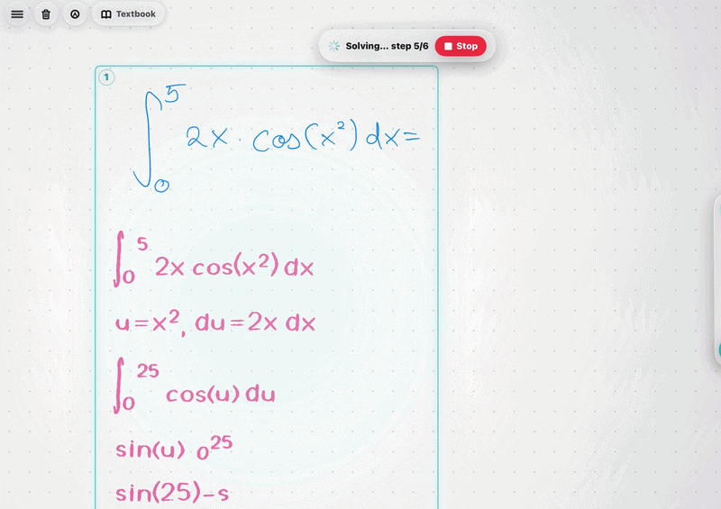

Most tutors arrive too late.
Klera watches you solve maths on an iPad and writes help back onto the board, in handwriting.

Write anywhere. Nothing is a text box.
The canvas is free-form. Klera finds the problems on its own: it groups strokes into clusters, one per problem, and follows each as its own attempt, with its own pauses, erasures, help history and outcome.
In the capture, the numbered box around the integral is a detected cluster. The student drew no box. Klera found the problem.
Five ways to ask. Only one gives the answer.
The usual failure of an AI tutor is that every button quietly turns into “tell me the answer”. Klera’s five actions have strict scopes that are enforced separately. Open one to see what it is allowed to do.
It writes. It does not type.
When Klera answers, the answer is written onto the board stroke by stroke, inside the problem it belongs to. These three frames come from the same recording, in order, while Klera solves the integral.



Structure before strokes
The newest engine parses an expression into structure first, so a fraction knows it is a fraction and an exponent knows it is raised. Then it lays out each glyph, composes the pen strokes, and times them.
Never a blank board
If any stage fails, rendering falls back to an older engine instead of failing in front of a student.
When a picture is the explanation.
Some ideas are not sentences. For those, Klera offers a dynamic visualisation, and only when the concept genuinely has one. The model is told to leave the suggestion out when a picture would add nothing.
Every showing is measured afterwards: did the student solve the problem, ask for a hint instead, or close it within seconds? That makes it possible to know which visualisations teach anything.
The part that is actually hard.
Everything above is surface. Underneath is the learner profile: how Klera tells a student who is thinking from a student who is stuck, built from each person’s own pen.